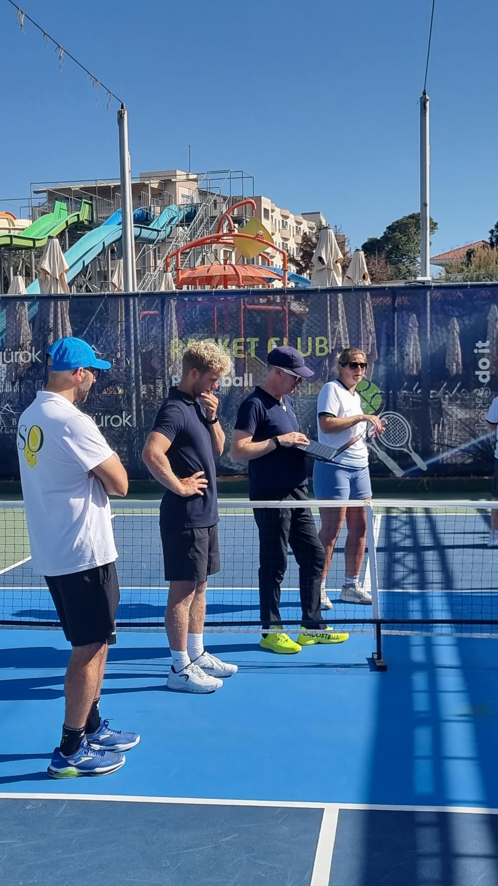

The strongest pickleball in the Antalya region is at the beach resorts east of the city. We spent a week at Ali Bey Resort Sorgun in April 2026 on a coaching trip — five courts beside the beach, coached by England team coaches. We'd played in Antalya city in October 2024 at Roots Farm, which has since closed.
Guide checked: October 2026 · Last played: April 2026

Ali Bey Resort Sorgun has five dedicated outdoor courts with a concrete surface, right next to the beach at Sorgun, near Side on the coast east of Antalya city. It's an ultra all-inclusive resort and the courts are open to guests only — there's no booking in from outside, so you need to stay there to play. It's the same set-up as playing at our hotel in Rota, but on a bigger scale.
We went on a week-long coaching trip organised by PSO Travel. Coaching was led by England team coaches Rob Williams and Pep Giuliano, alongside Laurence Juliennes and Heidi Jerrard, with games between sessions. In our filmed game, all four players rated between 3.7 and 4.0 on PBVision.
Our take: good courts, high-level coaching and a strong standard of games. The catch is access — you can only play as a resort guest, so plan it as a coaching week or a resort stay.
We filmed our game against Mark & Morag during the coaching week and ran it through PBVision to see what the footage showed beyond the scoreline.
A close one. Every serve was legal and Dave reached the kitchen on all 13 of his returns. The gap was on serve: he got to the kitchen on only 2 of 7 points after his own serve, which is where tight games like this are won. Louise was the top-rated player on court at 4.00.
Watch the full PBVision breakdown →| Court quality | ★★★★☆ |
| Quality of games | ★★★★☆ |
| Ease of joining | ★★★★★ |
| Competitive level | ★★★★☆ |
| Value | ★★★★☆ |
| Wanderers rating | 9/10 |
Would we go back? Yes — we're back in November 2026 for the European Open, hosted at the sister resort, Ali Bey Club Manavgat. The coaching and the standard of games make Sorgun worth the trip; the guests-only access is the only thing that limits it.
Roots Farm had a single court, and it's where we played during our month-long stay in Antalya in October 2024, with regular games against local players. It has since closed.
Ali Bey's courts are for guests only. A coaching week through PSO Travel is the simplest way in, with courts, coaching and games arranged for you.
Sorgun is on the coast east of Antalya city, near Side. If pickleball is the point of the trip, stay out there rather than in the city.
We played in April and October. The courts are outdoors, so the shoulder seasons are the time to go.
Roots Farm, where we played in 2024, has closed. Contact Lara Pickleball Club before planning games in Antalya city.
Antalya's best pickleball is at the resorts, not in the city. Ali Bey Resort Sorgun gives you five beachside courts, England team coaches and a strong standard of games — as long as you're staying there. It's the region to come to for a coaching week or a tournament. If you're comparing sun-and-pickleball trips, our Algarve, Málaga and Rota guides are worth a look.